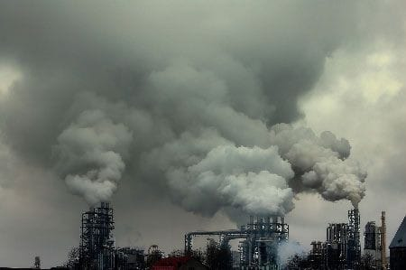

"Playa 360°: Despertando la Conciencia Ambiental desde la Orilla"
Este título busca transmitir la idea de una experiencia inmersiva y completa al abordar la concientización sobre la playa. Utilice el término "360°" para enfatizar la importancia de abordar todos los aspectos de la problemática ambiental en las playas, e invite a los visitantes a unirse a esta experiencia desde la orilla.

Desechos de industrias
La causa principal de la Contaminación Industrial es la quema a gran escala de combustibles fósiles como el
petróleo, el carbón, el gas y además el agua residual envenenada que contamina tierra, ríos y lagunas.
Existen tres tipos de contaminación entre los que encontramos sus causantes:
1. Contaminación del aire: es producida por los humos de los vehículos e industrias, aerosoles, polvo,
ruidos, malos olores, radiación atómica, etc. Entre los contaminantes gaseosos más comunes se encuentran el
dióxido de carbono, el monóxido de carbono, los hidrocarburos, los óxidos de nitrógeno, los óxidos de azufre
y el ozono.
Las principales causas de la contaminación del aire están relacionadas con la quema de combustibles fósiles
como carbón, petróleo y gas. La combustión de estas materias primas se produce principalmente en los
procesos o en el funcionamiento de los sectores industrial y del transporte por carretera.
2. Contaminación del agua: de acuerdo con la Organización Mundial de la Salud (OMS), el agua se denomina
contaminada cuando su composición se haya alterado de modo que no reúna las condiciones necesarias para el
consumo humano y de los animales.
La contaminación del agua afecta a ríos, mantos acuíferos y mares, que se convierten poco a poco en
verdaderos basureros. Los elementos contaminantes que se pueden encontrar vertidos en aguas negras (urbanos
e industriales) son petróleo, productos fitosanitarios (como plaguicidas), abonos, pesticidas, detergentes y
otros productos nocivos para el medio ambiente.
3. Contaminación del suelo: es aquella producida por el vertido de sustancias químicas y basuras. Cuando se
acumulan basuras al aire libre en un mismo lugar durante mucho tiempo, parte de los residuos orgánicos
fermentan y se filtran a través del suelo, sobre todo cuando este es permeable. Al dejar pasar los líquidos,
contamina con hongos, bacterias y otros microorganismos patógenos el suelo y las aguas (superficiales y
subterráneas) que están en contacto con él, afectando así a las cadenas alimenticias.
Los plaguicidas utilizados en la agricultura son otro de los principales contaminantes del suelo. También,
la actividad minera contamina los suelos a través de las aguas de relave, que contienen elementos químicos
como mercurio, cadmio, cobre, arsénico, plomo, etc.
El Mar Argentino es un sector del Océano Atlántico Sudoccidental que tiene una extensión de alrededor de un
millón de kilómetros cuadrados. Allí ballenas, delfines, pingüinos y muchos otros animales que lo habitan
están en peligro por la amenaza de una inminente actividad petrolera que incluye bombardeos sísmicos
constantes que se utilizan para localizar petróleo en el fondo marino. Si la industria petrolera avanza
también sería una verdadera condena para las comunidades costeras y sus medios de vida. Sería inevitable que
derrames de petróleo lleguen a las playas afectando a los ecosistemas marinos, los paisajes y las economías
de las ciudades. El turismo y la pesca, los deportes acuáticos son actividades que están íntimamente ligadas
a la calidad del agua y las playas.
uno de estos casos es la oficina de equinor el villano de los oceanos quien pretende avanzar con proyectos
petroleros en Argentina es el gigante petrolero estatal noruego Equinor. La empresa también tiene planes
para el Mar de Barents (Océano Ártico), Bay du Nord en Canadá en medio de la crisis climática global, La
operación en el Mar Argentino sería especialmente peligrosa porque hay una superposición entre los bloques
que Equinor planea explotar y los patrones de migración y zonas de alimentación de elefantes marinos,
pingüinos y la Ballena Franca Austral, una especie icónica y protegida proclamada monumento nacional.
ahora vamos a ver como evitar y frenar equinor: Los permisos pedidos por Equinor que se estaban evaluando
para realizar exploración sísmica en 2021, a pesar de una ciudadanía que expresó un rechazo contundente
presentando argumentos fundados y documentados en la Audiencia Publica de Julio del año pasado, fueron
aprobados por el Ministerio de Ambiente en Diciembre 2021. Las demandas presentadas por Greenpeace y
organizaciones sociales y ambientales lograron suspender preventivamente dichos permisos, pero no
definitivamente.
Además, ya hay 2 nuevos proyectos en proceso de Evaluación ambiental: Permiso de Perforación exploratoria
Bloque CAN 100 Pozo Argerich 1 propuesta por Equinor, y Relevamiento sísmico 3D Bloque CAN 102 propuesta
por YPF.
En el hogar:
Apagar los aparatos eléctricos y a gas que no estén en uso.
Desconectar los aparatos eléctricos (TV, microondas, equipos de audio, DVD, PC, etc) que estén en stand by,
pues – aunque no estén en funcionamiento – consumen energía.
Al comprar un electrodoméstico (heladera, freezer, lámpara o equipo de aire acondicionado), optar por
aquellos que poseen etiquetas de eficiencia energética (clasificación A).
Reciclar los residuos, separándolos de los desechos no reciclables.
Utilizar lámparas de bajo consumo: insumen 80 por ciento menos de energía y duran 6 veces más.
Apagar las luces de ambientes no utilizados.
Al momento de utilizar el aire acondicionado, corroborar que los filtros del equipo estén limpios y regular
la temperatura a 24º, para así evitar un consumo extra de energía.
Para las compras, utilizá tu propia bolsa en lugar de las bolsas de plástico o de papel entregadas en los
comercios, para reducir la presencia de estos residuos plásticos que tardan aproximadamente 150 años en
biodegradarse.
Regular el uso del agua.
Descongelar el freezer antes de que la capa de hielo alcance 3mm. de espesor, lo cual permite un ahorro de
30 por ciento de energía.
En la oficina:
Apagar la computadora y el monitor al final de la jornada.
Programar la pantalla del ordenador para que se apague cuando no se utiliza (posible en opciones de
protección de pantalla).
Apagar las luces al abandonar la oficina.
Reciclar y reutilizar el papel. Realizar fotocopias o impresiones a doble cara.
Transporte:
Procurar el uso diario de transporte público o bicicletas.
Para los trayectos cortos (inferiores a3 km), optar por la bicicleta ola caminata. Unrecorrido de tal
distancia en auto contamina más debido a que el motor está frío y su combustión no es óptima.
En caso de utilizar el auto:
Coordinar con familiares o amigos, para compartirlo.
Apagar el motor ante esperas que superen los 60 segundos.
Comprobar la presión de los neumáticos, ya que si no es la adecuada, suele aumentar el consumo de
combustible en un 5 por ciento.
Verificar que el catalizador – cuyo objetivo es transformar químicamente los gases nocivos que emite el
motor para hacerlos menos contaminantes – funcione correctamente.